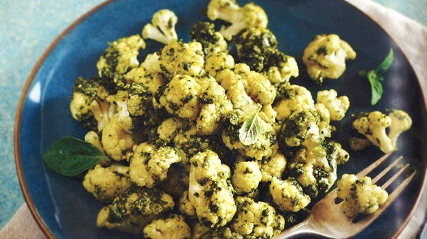

Cauliflower Gnocchi With Walnut Pesto

Cauliflower, especially when steamed, has a fairly mild flavor and much like rice and pasta, acts like a carrier for the sauce you put on it. Try to simplify meals by not combining dense proteins and starches, as this makes for easier digestion. This veggie replacement is a perfect pasta alternative.
Bring a medium pot of water fitted with a steamer basket to a boil over medium-high heat. Add the cauliflower, and steam, covered, for about 9 minutes, or until tender but not too crumbly. With a slotted spoon, carefully transfer the steamed cauliflower to a medium serving bowl, shaking off any water droplets in the process. Set aside.
Combine the basil, walnuts, olive oil, lemon juice, garlic and sea salt in a food processor or blender (or do this by hand with a mortar and pestle), and pulse until you achieve a pesto with your preferred consistency. Try breaking down the walnuts pretty finely, for easier digestion.
Mix together the pesto and reserved cauliflower; garnish with basil leaves for a fabulous presentation and serve at once.